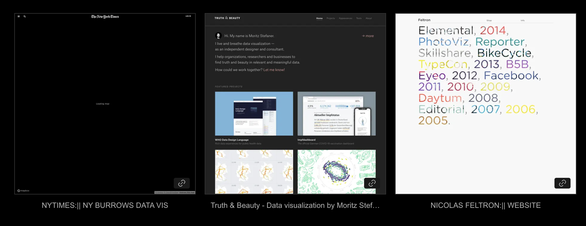
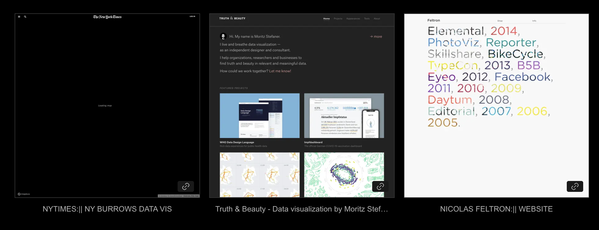
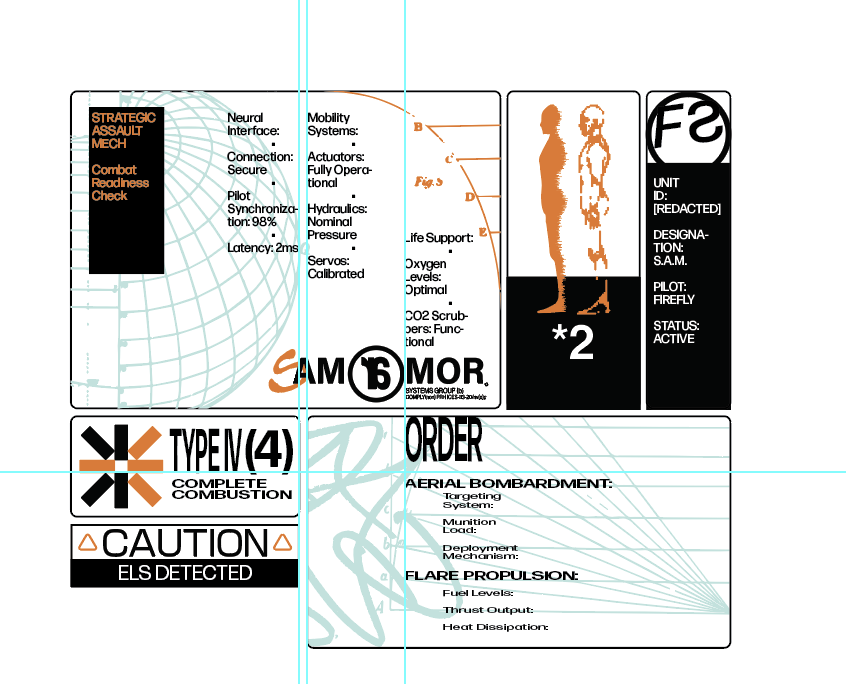
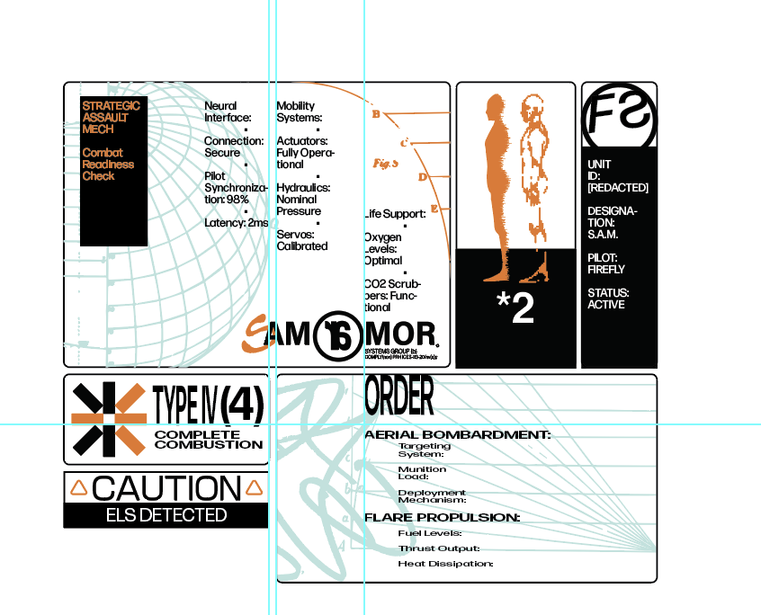

Response 1: Louise Sandhaus
One thing, rather, one thought that stuck out to me during the lecture
was the selective method of preservation that the Peoples Graphic Design
Archive (PGDA) uses. I completely understand the choice regarding the
exclusion of contemporary design, since everything is so web-based, and
most likely accessible, contrary to those examples of design that may be
lost to time if not digitized and archived.
I believe Louise mentioned something along the lines of
"considering the currency of design and the digital nature of most
designs today, they usually won't get lost to time because they are
not preserved but rather because of other factors."
I generally agree with this sentiment; however this raises the question
of what efforts are we making to preserve the digital, contrary to the
analog?
its on the cloud innit
A plethora of our data currently lives on the cloud (or on several
harddrives if you have good data backing practices (not me) ). Despite
this, there seemingly is not a lot of concern on everything just
disappearing overnight. A case study of this was with the Google cloud
screwup in which resulted in an accidental deletion of a private cloud
account of "UniSuper," an Australian pension fund, and the subsequent
loss of around $135 Billion in records. (Thankfully they recovered
because they had a backup.)
With these points in mind I find myself asking, whether the ultimate
form of preservation exists in the analog, somewhere organized neatly,
and stored in a bunker, or in the digital, existing on a thread of
redundancy between a multitude of servers, or better yet, a well
mediated combination of both.
no contemporary?
During the lecture I was a little ticked off, in a sense, that the PGDA
was targeting only works older than 20-30 years? (Not sure at the
specific amount.) Anyhow, the rather restrictive selection process that
I found in their moderation policy was something I disagreed with,
albeit I still believed that their cause, the preservation of older
design material was a noble one, I thought to myself that they should
open up the doors to a more lenient moderation policy to allow for more
avenues of work.
This opinion was mostly driven by a thought that even contemporary media
should also be preserved, that despite most work being digitized and
existing on the cloud, there may work that exist only on an old 2009
Dell laptop, that also deserve to be preserved, and remembered, but is
instead barred by the moderation policy of the PGDA.
Although I do understand their choices regarding this due to the
economic implications of their operation, as well, I am not the judge of
their organization's Ethos, I'm sure there are other databases out there
dedicated to the preservation of more contemporary media.
so what?
Overall, the lecture also prompts me to just essentially, preserve more
of my work. I grew up during a mostly digital era, and from a young age
was already working mostly digitally. I believe I wrote my essays on
google docs starting in Grade 6, and by Grade 7 the school was already
urging everyone to get their own devices. (If memory serves me right.)
Despite this, I have lost countless hours of work. Disappeared among the
ethereal nature of the web, gone when I factory reset my laptop for the
4th time since I downloaded another virus, or simply just lost. The most
robust archive of my work begun with the start of OCADu, once I received
a generous 5 TB ( 1-2 TB now, a bit stingy but I wasn't gonna use all 5
TB anyways (i'm still a little sad about it) ) on my OneDrive, and ever
since I've been mostly working off of the cloud, and backing up my data
physically every now and then.
I've even lost about 50% of my University portfolio submissions as I was
working off of my google account that my high school provided. Once I
graduated, it was deleted, along with all of the data on there. I guess
the lesson is that ultimately,
preservation is in your own hands.
thus.
Thus, I've begun reconstructing my portfolio as more of an archive of
all of my work as well. Despite this, I am still at the mercy of how
much I can be asked to back up my data and the cloud provider I am
allotted. You can see the current progress of the "archive" of myself
here:
thedw.format.com
Response 2: J. Dakota Brown
First off, loved his talk, really gave a lot of insight into
how closely related the history of design is to the history of "labor, class and gender" as he put it in his own words. As well, especially how applicable it
is today, and the situation many designers may face soon with the
meteoric rise of artificial intelligence and the looming threat of the
automation of many of our work in the near future.
But also to that, I have mixed feelings and generally, this talk brewed
up a lot of thoughts and internal discourse for me to think on, here are
some that were sprouted.
competition drives innovation
While not inherently exclusive to the practice of design, I find this an
interesting topic. From my notes and what I've synthesized during the
lecture, there seem to be a lot of examples of
competition driving innovation. While there is an
argument that human nature seeks to innovate, what is it that drives
that spark for technological advancement? Is it the hope for a better
quality of life that provides the resolve for innovators? Or is it much
more profit minded and a capitalist nature? Or both? Something for me to
ruminate on.
a deadly loss in experience
Brown spoke out on how Tschichold preached how "for the worker, machine production has meant heavy, almost deadly
loss in experience." How the shift towards automation was sapping interest and creativity
out of the work itself. I agree with this sentiment completely, as of
course there was a period of struggle for the workers when they had to
retrain for other lines of work. Imagine practicing something that you
are passionate about, good at, only
for technological innovation to take, completely away from you.
However, this is why I have mixed feelings on the topic of automation. I
believe that technological progress is essential for humankind,
and I vouch for innovation on the technological front. Quality of life
across the globe is statistically at a time high. Life expectancy has
been steadily increasing across the globe, economic growth will lead to
higher standards of living for developing and developed countries,
access to education has also grown. Albeit, there are also problems with
today's world, such as increasing inequality, especially in wealth,
environment concerns, world conflicts and more. I am still
bullish on the advancement of tech, especially
artificial intelligence.
However, A.I alignment, as well as how major AI frontrunners such as
OpenAI, Google, Anthropic, tackle the democratization of AI use will
factor in significantly to how it will shape our world (which is kinda
fucked that to an extent the future of the world is just dependant on
these guys, but I digress.) I am still relatively optimistic about how
AI will turn out, especially with the push for the
open sourced nature
of recent models in Llama, and Grok, as well as generally the ethos of
Anthropic has reflected a thoughtful approach toward safety. However,
Open AI going for-profit was not a good indicator, but then again how
can you economically keep up with the hardware demands of AI without
bringing in the revenue to support such enormous costs?
Ok, I might have gotten a bit off track, but overall it shows that I'm
relatively optimistic about AI, but why? People will lose their jobs, we
may see unemployment rise as high as 30%-40%, as well
as an even larger wealth gap if it's not handled properly. What I'm
hyped about is how AI can provide way more agency to me as a creative,
not necessarily a designer if everything goes right. Imagine a
multidisciplinary approach in which I can utilize theory germane to the
practice of GD and apply it to another medium, let's say, animation. I
have so many cool ideas as to how to potentially incorporate typography
into animation, as well, there are so many grandeur ideas and concepts
floating around in mind that can only come to fruition in two possible
channels:
- I have a shitload of money, like a shitload of money.
-
AI is developed to the point of agentic ability,
which allows me to then essentially formulate my own little "team" of
agents to ultimately pursue my own creative vision that would not have
been available otherwise. Films, stories, animations, we are then
essentially our own creative directors for visions of our own.
I admit, there will certainly be a "dark age" in which
we as a society will have to adapt to this shift in labor demands. I am
not an economist, nor am I an AI researcher so I have no solid points to
have discourse on how we can navigate through this dark age, long it
will be, or even what it will look like. However, optimistically
speaking, if we were to overcome that dark age, I can only smile at the
opportunities in which I can creatively express myself in ways
unimaginable now. Which admittedly, is also wishful thinking, and I do
sincerely believe that the discourse and discussions we are having today
surrounding the near future of labor are paramount and take precedent
over what I am discussing here today. However, I just wanted to get some
thoughts out onto paper (or code.)
the generalist vs. the specialist
I feel like with each era of tech, our work gets less and less granular
and more and more generalized. As an easy example, the linotype killed
off the specialistic work of the typesetter. What was once a role that
required meticulous craft is now streamlined to machines that
manage entire lines of text at once. It's almost like each advancement
abstracts a layer of detail, and we're killing specialized skills for
more automated functions. Now in our current era, tasks that were once
handled by literal teams have become abstracted to a click in indesign.
Which gives rise to the question, would it be better as of right now to
broaden our scope as designers in anticipation of the
near future of AI? Not this is not to say you can't pursue your
interests, do whatever you want on that front, but on the subject of our
"prowess" as designers, we might actually find it beneficial to expand
our skillset and essentially, opt for a more interdisciplinary approach.
But its also fucked since then we're completely separated from the work
we are actually creating. Ok sure, like imagine a situation were we can
leverage the expertise of the AI to tackle more granular issues
regarding UX, motion graphics, coding, or marketing even, and us as
designers will essentially act as creative directors who
influence the direction of the work being created, but in that sense,
are we even making, or are we just directing?
Process is very important to graphic design, material
exploration, iteration, tactile experimentation are all influences in
the design process. So does that mean there is less meaning in our work
the less process there is?
Will society even care? Will our clients care?
Process is important to us and not them.
But, on the other hand, becoming a generalist and leveraging tech will
for sure empower us to tackle multifaceted briefs and problems that
might require more interdisciplinary skillsets. Like imagine designing a
wayfinding system by yourself in weeks with the power
of AI, vs. across years in a team.
And perhaps, in the same way in which I don't really think about what
Illustrator is doing, and the code that is working behind the scenes, in
the future I'm gonna be using Adobe DesignAll™ not knowing how it just
made that entire poster, and that ultimately, taking a step back might
be inevitable, as it has been with technological innovation in the past.
We will keep taking steps back until there are no more steps to take and
we live in a
Fully Automated Luxury Gay Space Communistic society (haha I
wish)


 


 
